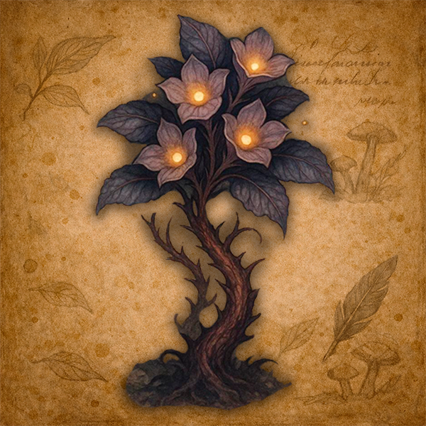

Vinha da Trama

Vegetação de caule firme e folhas estreitas, capaz de crescer mesmo em solos menos férteis. É frequentemente usada por moradores locais como insumo medicinal simples ou para preparo de infusões amargas.
Em regiões diferentes, pode receber outros nomes e interpretações, mas sua aparência continua relativamente reconhecível.
Costuma aparecer também nas margens de Astoria, onde recebe nomes diferentes.